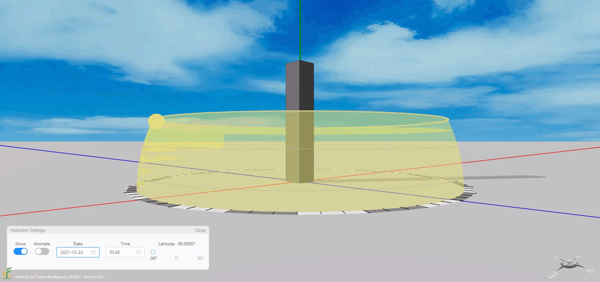
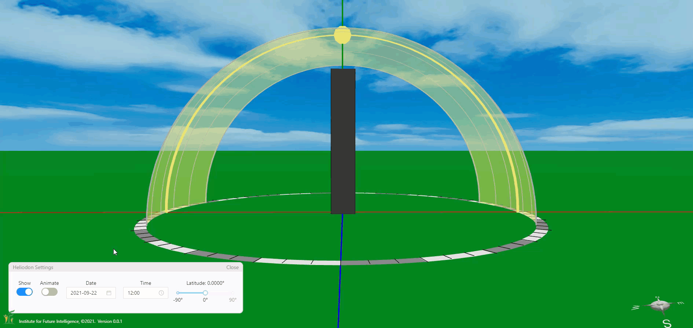
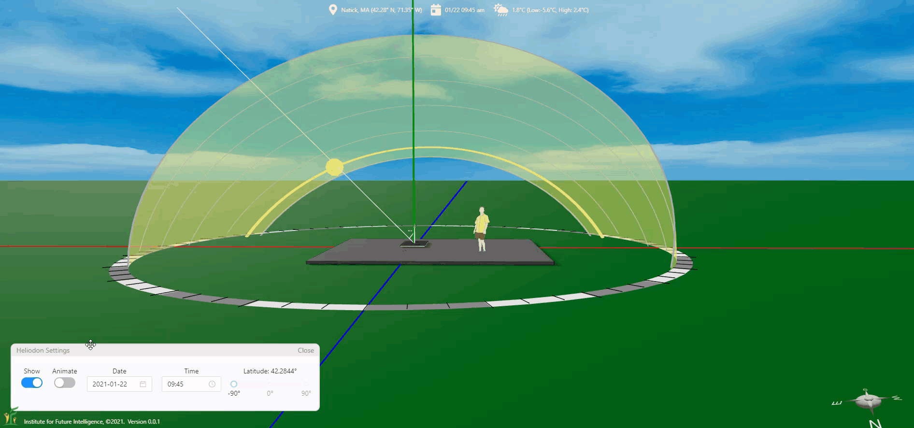

A Virtual Heliodon in Aladdin
By Charles Xie ✉
Listen to a podcast about this article
To support the design of solar energy solutions, Aladdin is equipped with a virtual heliodon for showing the sun paths at different latitudes and seasons. For those who do not already know, a heliodon is a mechnical device used in architectural engineering for setting the angle between a surface and a beam of light to simulate solar radiation on that surface.
Live model above (view in full screen)
Visualizing the sun paths at different latitudes
With the virtual heliodon in Aladdin, you can explore the trajectory of the sun in different parts of the world. For example, if you set the latitude to -90° (the south pole) and the date to December 22, you will find that the sun never sets on that day. If you change the latitude to 0 ° (the equator), you will find that the day is the longest in the spring (the vernal equinox) and fall (the autumnal equinox). This may be a bit counterintuitive to people living in high-latitude areas where the longest day of the year is always in the summer.


The sun paths at different locations in the world in different seasons
Heliodon and sun beam
In Aladdin, you may be able to show the sun beam shining on some objects such as solar panels. In most cases, the sun beam does not exactly go through the yellow circle of the heliodon that represents the sun, as shown below.

The sun beam does not go through the yellow circle of the heliodon
Only when the beam strikes exactly at the origin of the coordinate system does the sun beam go through the yellow circle, as shown below (you can also see from the live model provided at the beginning of this page).

The sun beam goes through the yellow circle of the heliodon when it strikes at the origin
Click HERE to view and edit the above model
As the sun is very far from the earth and the earth is relatively tiny compared with that distance, sunlight is considered as parallel light when it reaches the earth. So, there is nothing wrong if the sun beam does not point to the yellow circle. But you should be aware of this when using the heliodon and the sun beam at the same time in Aladdin.